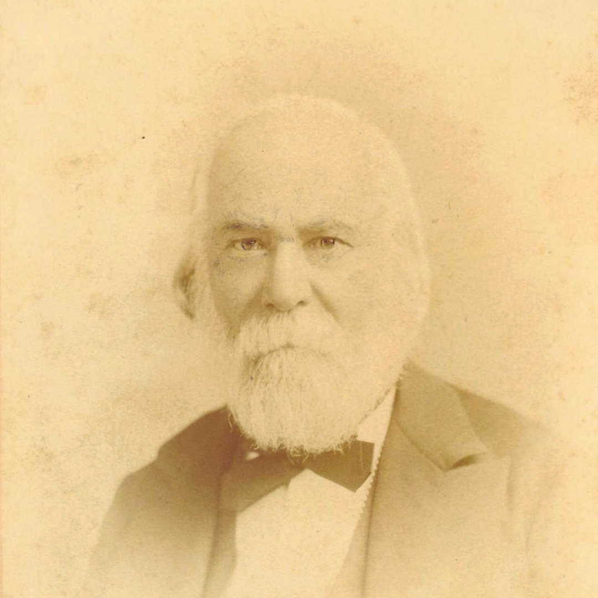

Born in Port Louis to an American sea captain who vanished before his birth, Séquard had a slightly chaotic life, moving between France, England and the United States. He taught in Harvard, ran a practice in London.
He contributed heavily to the scientific field, working his way up to experimental medicine at the Collège de France. His contributions are still taught to this day, one of which being Brown-Séquard syndrome, the specific pattern of paralysis caused by damage to one half of the spinal cord. Séquard is considered one of the founding fathers of endocrinology; the study of the endocrine system, the glands which produce and release hormones. On 1st June 1889 at age 72, Séquard announced to the Société de Biologie in Paris (a French scientific society dedicated to biological research) that he had begun injecting himself with a fluid made from the crushed and filtered testicles of dogs and guinea pigs.
His reasoning? When testicles were removed from a bull or horse, they lost strength and aggression, so surely injecting their essence back into yourself would cause the opposite effect. Consuming testicles in some form has been a long-running tradition through ancient societies, but surely his reasoning was sound, right?
The whole effort was aimed at pushing back the decline of age and buying back the vitality of a younger man.
His claims were self-reported: greater strength, sharper focus, improved digestion and... an increase in urine stream distance, for which he provided evidence. His outcomes were said to be recorded and measured, convincing many of his colleagues.
His claims were almost certainly placebo; the testosterone he believed he was receiving, when taking into account the preparation method, was likely negligible and nowhere near enough to sustain an effect. This method didn't stop with Séquard, many physicians began injecting patients with testicular extracts and he even popularised organotherapy; the use of animal or human organs in medicine.
He died five years later from a stroke at age 77. The elixir had bought him nothing he expected. And yet he had hold of a real thread, he was simply pulling it forty years too early: testosterone was genuine, isolated only in the 1930s, his theory of internal secretions sound and his dose hopeless. Séquard came from a position of knowledge and recognition in the scientific world, yet was fooled by the most ordinary force in medicine: the placebo.